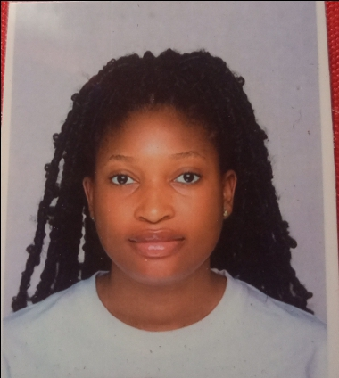

Calista Chidimma Ugwu

Summary
I am self-motivated, creative, focused and keen to
learning with great interest, highly organized,
resourceful and goal oriented.
Handles multiple projects simultaneous with high
degree of accuracy.
Education
- Wellspring University, Benin City, Edo
State.
Bachelor of Science (First Class Honors)
In International Relations
2017 - 2021
- School for the Gifted, Gwagwalada,
Abuja, Nigeria
Senior Secondary Certificate
2012-2015
Work Experience
- Secretary|Kogi State University-Ayingba
04/2022-02/2023
Key Responsibilities
- Administrative support to the Head of Department.
- Typing of documents and compilation of information for meetings with exceptional speed.
- Ensuring students registration and updating of files and records
- Handling of sensitive administrative documents
- Welcoming arriving visitors and directing them to the appropriate meeting rooms.
- Assisting in other clerical roles in the office.
- Sales Representative|Italy Wears and Shoes-Karu, Abuja
08/15-07/16
Key Responsibilities
- Accounting for all inventory and ordering of new stock.
- Maintaining good communication with clients to assess overall satisfaction, resolving complaints and promoting new offerings.
- Ensuring constant increase in sales.
- Financial account of all sales.
Skills
- Proficient in Microsoft Office packages (Word, Excel,PowerPoint)
- Observation
- Decision making
- Strong Communication
- Multi-tasking
- Adaptabilty
- Team work
- Time management
Awards
- Best Graduating Student (2021), Department of International Relations, Wellspring University.
- Recognition Award for Face of SAGE (2015), Student for the Advancement of Global Entrepreneurship
- Merit Award (2014), FCT Secondary School inter-schools debate competition.
Contact me
Hobbies